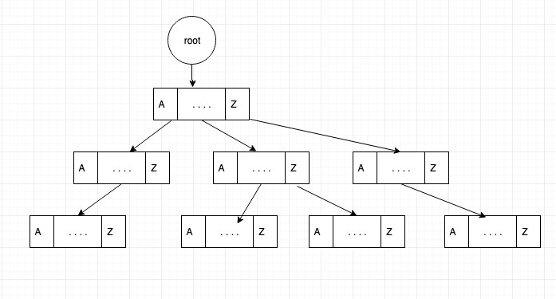
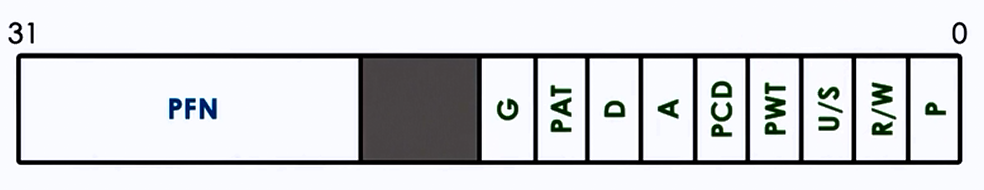

背景
程序 = 状态机
- 程序执行 (进程) = 状态机上的路径
进程 (状态机) 管理的 API
- fork - 复制
- execve - 重置
- exit - 终止
本次课内容与目标
学习虚拟存储是如何实现的
- 进程的地址空间和 mmap
- 分页机制与虚拟存储
进程的地址空间
进程的地址空间里有什么？
进程作为状态机，$(M, R)$ 中的 $M$ 到底是什么？
个 void *p 可以指向任意整数
- 非法区域 (
NULL; 导致 segmentation fault) - 代码 (
main,%rip会从此处取出待执行的指令) - 数据 (
static int x) - 堆栈 (
int y) - 动态链接库 (???, 但 gdb 调试可以进入)
- 运行时分配的内存 (???)
它们停留在概念中，但实际呢？
查看进程的地址空间
pmap (1) - report memory of a process:
演示：调试一个最小的程序 (静态/动态链接)
- 程序执行 (execve) 之后的地址空间 (操作系统创建)
- 到达 main 之后的地址空间
- 这就是我们看到进程地址空间的全部：
若干连续的 “段” - 不在段内的内存访问 (和违反权限的访问) 都将导致 Segmentation Fault
- 这就是我们看到进程地址空间的全部：
思考题
- 如何知道 pmap 是如何实现的？
查看进程的地址空间 (cont'd)
pmap 是基于 procfs 中的 maps 实现的
- 我们有 strace 的证据！
$ cat /proc/[pid]/maps
00400000-004b6000 r-xp /tmp/a.out (代码)
006b6000-006bc000 rw-p /tmp/a.out (数据)
006bc000-006bd000 rw-p (bss)
0131f000-01342000 rw-p [heap]
7fff993c9000-7fff993ea000 rw-p [stack]
7fff993f4000-7fff993f7000 r--p [vvar] <- WTF?
7fff993f7000-7fff993f9000 r-xp [vdso] <- WTF?
ffffffffff600000-ffffffffff601000 r-xp [vsyscall] <- WTF? 这地址?
试试：是不是 bss? bss.c
我们发现了什么宝藏？
vdso (7): Virtual system calls: 只读的系统调用也许可以不陷入内核执行。
vsyscall 的例子

- 时间：内核维护秒级的时间 (所有进程映射同一个页面)
- 例子：time (2)
- 我们甚至可以调试它
- 例子：time (2)
- getcpu：per-CPU 映射页面
Virtual System Calls: 实现
让内核和进程共享数据 (内核可写，进程只读)
- vvar: 内核和进程共享的数据
- vdso: 系统调用代码实现 (是操作系统的一部分)
- vsyscall: ??? (
ffffffffff600000这么诡异的地址)- 是普通系统调用的包装
- 曾经的 exception-less syscall 实现，但存在安全问题
- 依然存在，保持向后兼容
- 是普通系统调用的包装
计算机系统里没有魔法！
- 我们理解了 Linux 进程地址空间的
全部 ！
(小知识) 系统调用的实现
“执行系统调用时，进程陷入内核态执行”——不，不是的。
系统调用就是一组接口的约定，谁说一定要 int 指令？
- 光一条指令就要保存 ss, rsp, cs, rip, rflags (40 字节) 到内存
SYSCALL — Fast System Call
RCX <- RIP; (* 下条指令执行的地址 *)
RIP <- IA32_LSTAR;
R11 <- RFLAGS;
RFLAGS <- RFLAGS & ~(IA32_FMASK);
CPL <- 0; (* 进入 Ring 0 执行 *)
CS.Selector <- IA32_STAR[47:32] & 0xFFFC
SS.Selector <- IA32_STAR[47:32] + 8;
(小知识) 系统调用的实现 (cont'd)
能不能让其他系统调用也不要陷入内核？
- 疯狂的事情也许真的是能实现的 (这算是魔法吗？)
- L. Soares and M. Stumm. FlexSC: Flexible system call scheduling with exception-less system calls. In Proc. of OSDI, 2010.
 使用共享内存和内核通信！
使用共享内存和内核通信！
- 内核线程在 spinning 等待系统调用的到来
- 收到系统调用请求后立即开始执行
- 进程 spin 等待系统调用完成
- 如果系统调用很多，可以打包处理
为进程创建地址空间
Execve 之后……
进程只有少量内存映射
- 静态链接：代码、数据、堆栈、堆区
- 动态链接：代码、数据、堆栈、堆区、INTERP (ld.so)
地址空间里剩下的部分是怎么创建的？
- libc.so 都没有啊……
- 创建了以后，我们还能修改它吗？
- 肯定是能的：动态链接库可以动态加载 (M4)
进程的地址空间 (cont'd)
进程的地址空间 = 内存里若干连续的 “段”
- 每一段是可访问 (读/写/执行) 的内存
- 可能映射到某个文件和/或在进程间共享
管理进程地址空间的系统调用
// 映射
void *mmap(void *addr, size_t length, int prot, int flags,
int fd, off_t offset);
int munmap(void *addr, size_t length);
// 修改映射权限
int mprotect(void *addr, size_t length, int prot);
- RTFM
- 说人话：在状态机状态 $M$ 上增加/删除一段可访问的内存
把文件映射到进程地址空间？
它们的确好像没有什么区别
- 文件 = 字节序列
- 内存 = 字节序列
- 操作系统允许映射好像挺合理的……
- 带来了很大的方便
- ELF loader 用 mmap 非常容易实现
- 解析出要加载哪部分到内存，直接 mmap 就完了
访问进程地址空间：游戏外挂
实现 “游戏外挂程序” (mem-probe.c)
- 这是一个简单版的 “内挂”——修改自己进程的地址空间
- 游戏外挂就像是游戏专用的 debugger
- 在适当的时候修改游戏本地的数据 (透视、瞬移等)
- 例如直接修改 rendering pipeline 指令
- 在适当的时候修改游戏本地的数据 (透视、瞬移等)
- 游戏外挂就像是游戏专用的 debugger
- 根据 pmap 的结果，读/写地址空间中的内存
- 其他进程的内存可以通过
/proc/[pid]/mem访问，原理类似

实现虚拟存储：分页和存储保护
需求分析
实现函数 $f: [0,M) \mapsto [0, M)$
- 把 “虚拟地址” 翻译成 “物理地址”
- $f$ 由操作系统控制 (应用程序不可见)
- 可以把 $f$ “装载” 到 CPU 上
- 此后任何指令访问地址 $x$ (包括取指令)，都访问物理地址 $f(x)$
- 任何越权访问 (未映射内存、无读/写/执行权限) 将触发 Page Fault
我们需要在硬件上实现数据结构 $f$
- 支持 $f$ 在运行时的动态修改 (mmap, munmap)
- 非常节约：$f$ 的存储开销必须远小于实际使用的内存
- 非常高效：每次访问内存都要计算 $f$
分页机制：用合适的数据结构存储页映射
把地址空间切成大小是 $p$ “页面”
- 只维护以页面为单位的映射
- 只要维护 $[0, M/p) \mapsto [0, M/p)$ 的映射
- 需要一个内存中的数据结构来描述这样的映射
- 基本假设：
空间局部性
- 基本假设：
- Radix-Tree (Trie) + TLB (Translation Lookaside Buffer)

分页 + 存储保护：实现虚拟化
映射是页面到页面的，也就意味着
- 4 KiB 页面就有 12 个 bits
- 可以用来存储页面的存储保护等信息！

- G - global, P - present
- PAT - large page (PML4 支持 1 GiB, 2 MiB, 4 KiB 页面)
- D - dirty, A - accessed
- PCT/PWT - cache-disable/write-through
- U/S - user/supervisor
- R/W - read/write
实现 mmap
mmap 的实现
“什么也不做，只是标记一下”。
mmap 并不需要真的为进程分配任何页面
- 只需要 “让操作系统知道这么映射” 就够了
- 进程访问页面会发生缺页进入操作系统……
缺页时操作系统会得到缺页的地址 (%cr2)
- 根据操作系统维护的进程地址空间信息分配页面或发送 SIGSEGV
- 思考题：用什么样的数据结构可以支持映射列表的维护？
神奇的 mmap
Example 1:
- 用 mmap 申请 8 GiB 内存空间 (map-alloc.c)
- 瞬间完成
- 不妨 strace 看一下吧……
Example 2:
- 用 mmap 映射整个磁盘 (map-disk.py)
- 瞬间完成
Memory-Mapped File: 一致性
但我们好像带来了一些问题……
- 如果把页面映射到文件
- 修改什么时候生效？
- 立即生效：那会造成巨大量的磁盘 I/O
- unmap (进程终止) 时生效：好像又太迟了……
- 若干个映射到同一个文件的进程？
- 共享一份内存？
- 各自有本地的副本？
- 修改什么时候生效？
请查阅手册，看看操作系统是如何规定这些操作的行为的
- 例如阅读
msync (2) - 这才是操作系统真正的复杂性
总结
总结
本次课内容与目标
- 学习虚拟存储的实现 (地址空间、分页机制和 mmap)
Takeaway messages
- 进程的地址空间是由 “内存映射” 组成的
- 分页机制是实现进程隔离 (虚拟化) 的基础